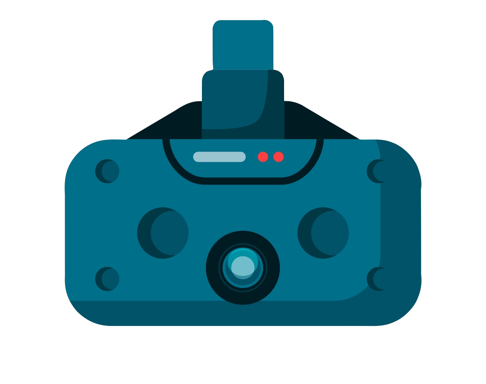

<mat-drawer-container class="container" [ngClass]="isChecked == true ? 'moon-contain' : 'sun-mode'" autosize>
    <mat-drawer #drawer class="sidenav" [ngClass]="isChecked == true ? 'moon-head' : 'sun-mode'" mode="side">
        <div class="up-menu">
            <h1>Uptale Analysis</h1>
        </div>
        <div class="items">
            <div class="item" (click)="selection(1)" [ngClass]="selected == 1 ? 'item-active' : 'item-simple'">
                <span class="icon icon-grid"></span>
                <span>Charger les données</span>
            </div>
            <div class="item" (click)="selection(2)" [ngClass]="selected == 2 ? 'item-active' : 'item-simple'">
                <span class="icon icon-search"></span>
                <span>Analyser les données</span>
            </div>
            <div class="item" (click)="selection(3)" [ngClass]="selected == 3 ? 'item-active' : 'item-simple'">
                <span class="icon icon-journey"></span>
                <span>Parcours</span>
            </div>
            <div class="item" (click)="selection(4)" [ngClass]="selected == 4 ? 'item-active' : 'item-simple'">
                <span class="icon icon-stats"></span>
                <span>Statistiques</span>
            </div>
        </div>

        <div class="images">
            <div>
                
            </div>
        </div>
    </mat-drawer>

    <div class="sidenav-content">
        <div class="top-bar" [ngClass]="isChecked == true ? 'moon-head' : 'sun-mode'">
            <button mat-icon-button color="primary" aria-label="Example icon button with a menu icon" (click)="drawer.toggle()">
                <mat-icon>menu</mat-icon>
            </button>
            <div class="night">
                <span [ngClass]="isChecked == true ? 'moon' : 'sun'" (click)="setValue()"></span>
            </div>
        </div>
        <router-outlet></router-outlet>
    </div>

</mat-drawer-container>